PROJECTS / PLANNING STUDIO
Designing for real places.
Explore eight documented project cases, then dive into the original planning-studio materials.
EPISODE 03 / BUILT ON REAL PLACES
Selected work.
Academic studio proposals, field research and professional practice, each identified by its actual context.
FROM THE ORIGINAL STUDIO PORTFOLIO
Inside the design process.
More than a project title: original maps, site observations and proposed layouts from planning-studio assignments. These are academic design concepts unless clearly identified otherwise.
Shaheb Bazar, Rajshahi
Existing-condition mapping and survey analysis for Rajshahi's busiest commercial hub around the RDA Market, followed by a proposed city-centre plan using urban renewal and land readjustment. The survey found congested lanes behind the mosque, shops occupying footpaths, and passengers waiting for transport in the road after rain.
The proposal adds organised hawking zones, parking, pedestrian space and a financial statement for feasibility. Team: Md. Tahatul Azid, Sumya Sorna, Nafisa Nasrin Tisha and others. Course teachers: Ferdous Farhana Huq and Md Muhaiminul Islam.
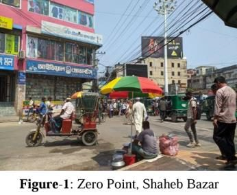
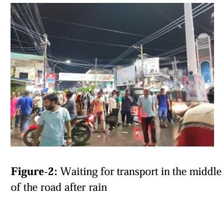
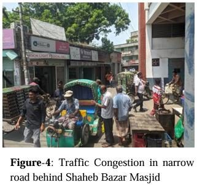
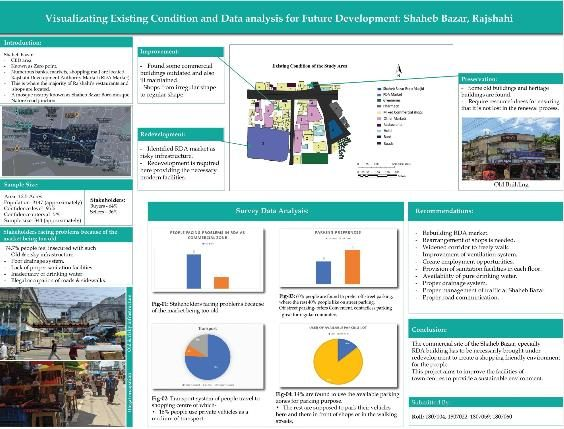


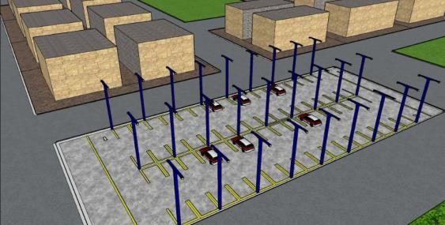
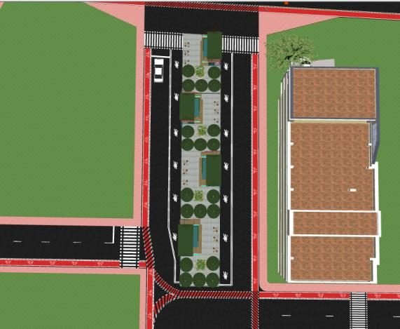
Smart communal living, Shyampur
A concept for Shyampur village in Rajshahi that pairs traditional communal life with smart solutions: smart houses, a communal garden, wetland-based waterbody regeneration and a skill development centre.

Amchottor intersection, Nowdapara, Rajshahi
Manual classified counts at the four approaches of the Aam Chattar roundabout measured vehicle composition, service flow, directional split and peak-hour factors. Speed-based, PHF and V/C methods all rate the intersection at Level of Service F.
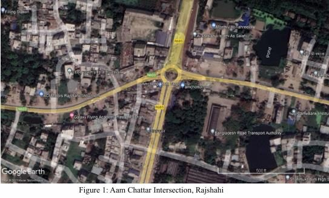
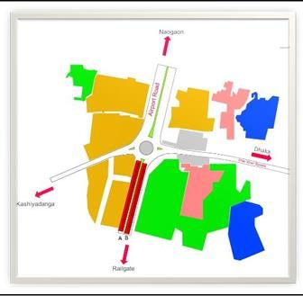
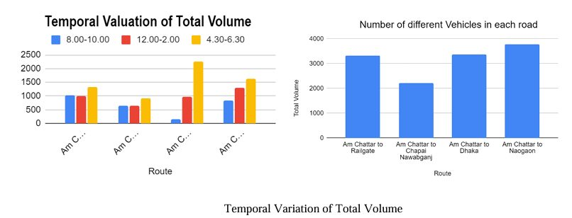
Health and wellbeing in Kumarapara, Premtoli
A survey of the potter community of Kumarapara, whose craft is declining, scored three wellbeing dimensions. Emotional and psychological wellbeing were higher than social wellbeing, and weak healthcare access and social support explain much of the community's vulnerability.
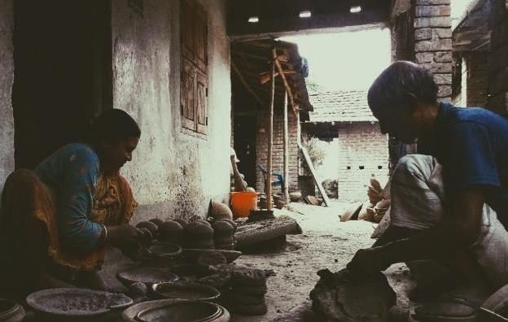
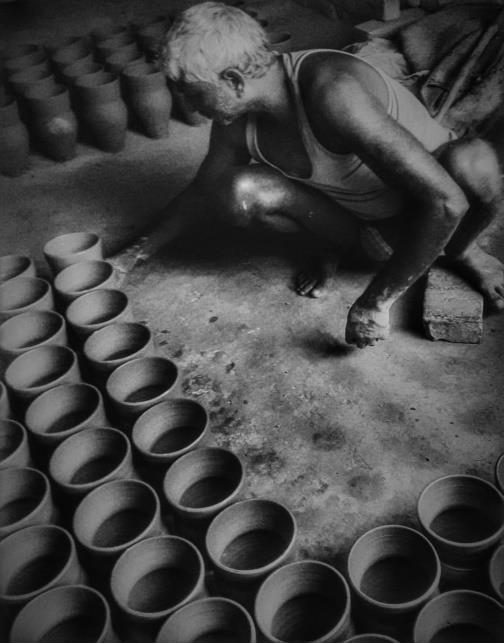
Urban sprawl and smart growth
A poster on the definition, causes, effects and remedies of urban sprawl, closing with smart growth: compact, walkable, transit-oriented development. Made with Nafisa Nasrin Tisha and classmates, guided by Ferdous Farhana Huq and Faria Afrin Zinia.